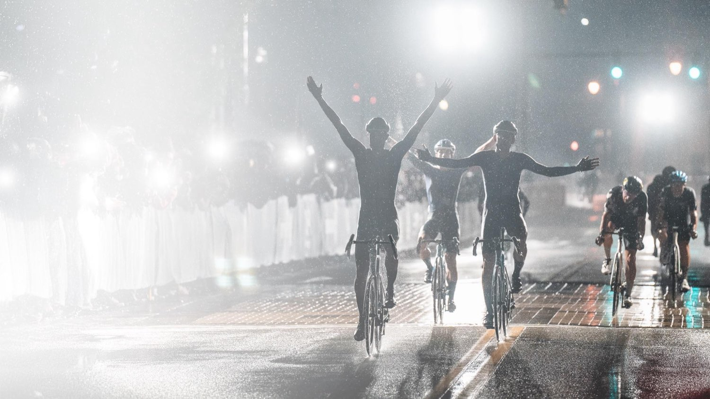

Results
The best results of the 2027 riders. Search by race, rider or year.

Rider results
57 results
| Year | Race | Rider | Place | Detail |
|---|---|---|---|---|
| 2026 | Canadian road championship | Jérôme Gauthier | 1st | Elite and U23 titles |
| 2026 | Dorletako Amaren Sari Nagusia | Noah Shelton | 1st | With Kelly Benefits Cycling |
| 2026 | Pan American Track Championships | Colby Lange | 1st | Madison, with Brendan Rhim |
| 2026 | Pan American Track Championships | Brendan Rhim | 1st | Madison, with Colby Lange |
| 2026 | Tour de Beauce | Jérôme Gauthier | 1st | Best young rider. 2nd on stage 5 |
| 2026 | Tour de Beauce | Jacob Roy | 1st | Stage 4 time trial, with Les Régis |
| 2026 | Tour de Bloom | Luke Elphingstone | 1st | Stage 2 |
| 2026 | Tour of Kahramanmaraş | Noah Shelton | 1st | Best young rider |
| 2026 | Tucson Bicycle Classic | Ben Boroff | 1st | Stage 4 |
| 2026 | Tucson Bicycle Classic | Luke Elphingstone | 1st | Stage 2 |
| 2026 | US U23 time trial championship | Kade Kreikemeier | 1st | |
| 2026 | USPro criterium championship | Luke Elphingstone | 1st | Elite men |
| 2026 | American Criterium Cup | Ben Boroff | Led | Points competition, for several weeks |
| 2026 | Canadian U23 time trial | Jacob Roy | 8th | |
| 2026 | Collegiate road nationals | Dylan Fluckiger | 2nd | Varsity team time trial, with Luke Elphingstone |
| 2026 | Gran Premio New York City | Jérôme Gauthier | 2nd | |
| 2026 | L'Enfer des Patriotes | Arnaud Lajoie | 4th | |
| 2026 | Pan American Track Championships | Colby Lange | 2nd | Team pursuit |
| 2026 | Tour de Beauce | Arnaud Lajoie | 25th | Overall |
| 2026 | Tour de Beauce | Tim McBirney | 3rd | Overall |
| 2026 | Tour of Istanbul | Noah Shelton | 3rd | Stage 3 |
| 2026 | Tour of Saint Louis | Ben Boroff | 2nd | Carondelicious Circuit Race |
| 2026 | Tour of Samsun | Luke Elphingstone | 3rd | Stage 4 |
| 2026 | Tour of Samsun | Jérôme Gauthier | 2nd | Overall |
| 2026 | Tucson Bicycle Classic | Garrett Beshore | 3rd | Overall |
| 2026 | US U23 road race | Ben Boroff | 9th | |
| 2026 | US U23 road race | Noah Shelton | 8th | |
| 2026 | US U23 time trial championship | Garrett Beshore | 7th | |
| 2026 | Volta a Portugal do Futuro | Jesse Maris | 3rd | Overall |
| 2025 | Canada Summer Games | Jacob Roy | 1st | Time trial |
| 2025 | Canadian U23 road championship | Jérôme Gauthier | 1st | |
| 2025 | Classique des Bois Francs | Arnaud Lajoie | 1st | Junior |
| 2025 | Collegiate road nationals | Luke Elphingstone | 1st | Varsity criterium |
| 2025 | GP Cycliste Sainte-Martine | Arnaud Lajoie | 1st | Junior |
| 2025 | GP Cycliste de Charlevoix | Jacob Roy | 1st | Overall, U21 |
| 2025 | Gorlako Igoera | Jesse Maris | 1st | |
| 2025 | Tour of America's Dairyland | Garrett Beshore | 1st | Overall, junior race, with two stage wins |
| 2025 | Volta a Galicia | Jesse Maris | 1st | Stage 3 |
| 2025 | Collegiate road nationals | Dylan Fluckiger | 7th | Varsity criterium |
| 2025 | Junior Tour of Ireland | Garrett Beshore | 3rd | Overall |
| 2025 | Tour de Bloom | Tim McBirney | 2nd | Overall. Won the stage 4 time trial |
| 2025 | US U23 criterium championship | Luke Elphingstone | 3rd | |
| 2025 | US U23 time trial championship | Kade Kreikemeier | 5th | |
| 2025 | Valley of the Sun Stage Race | Tim McBirney | 3rd | Overall |
| 2025 | Vuelta a Guatemala | Kade Kreikemeier | 4th | Stage 5 |
| 2024 | Kreiz Breizh Elites | Brendan Rhim | 1st | Stage 1 |
| 2024 | Tour de Beauce | Brendan Rhim | 1st | Stage 4 |
| 2024 | Tucson Bicycle Classic | Brendan Rhim | 1st | Overall |
| 2024 | GP de la ville de Pérenchies | Colby Lange | 7th | |
| 2024 | USPro criterium championship | Brendan Rhim | 2nd | |
| 2024 | Vuelta a Zamora | Kade Kreikemeier | 2nd | Overall |
| 2024 | Vuelta a Ávila | Kade Kreikemeier | 6th | Overall |
| 2023 | Pan American Games | Colby Lange | 3rd | Team pursuit |
| 2023 | Pan American Games | Colby Lange | 3rd | Madison |
| 2022 | Aubel-Thimister-Stavelot | Jesse Maris | 3rd | Overall, junior |
| 2022 | Redlands Bicycle Classic | Tim McBirney | 3rd | Stage 3 time trial |
| 2019 | Tour de Beauce | Brendan Rhim | 1st | Overall |
Some results came with earlier teams. Checked against ProCyclingStats and race reports, November 2026.
Team record
- 63
- Pro wins, 2023 to 2025
- 150
- Top-10 finishes, 2024 to 2025
- 160
- Race days, North America and Europe
- 9
- National champions
- 9
- Pan American champions
- 2
- Para Olympic champions